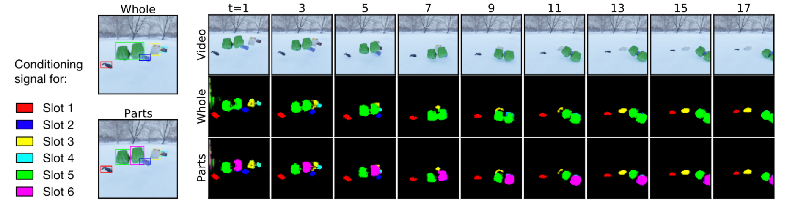

Figure: SAVi decomposes videos into objects using only simple cues, such as bounding boxes, in the first frame of the video.
Object-centric representations are a promising path toward more systematic generalization by providing flexible abstractions upon which compositional world models can be built. Recent work on simple 2D and 3D datasets has shown that models with object-centric inductive biases can learn to segment and represent meaningful objects from the statistical structure of the data alone without the need for any supervision. However, such fully-unsupervised methods still fail to scale to diverse realistic data, despite the use of increasingly complex inductive biases such as priors for the size of objects or the 3D geometry of the scene.
In this work, we instead take a weakly-supervised approach and focus on how 1) using the temporal dynamics of video data in the form of optical flow and 2) conditioning the model on simple object location cues can be used to enable segmenting and tracking objects in significantly more realistic synthetic data.
We introduce a sequential extension to Slot Attention — Slot Attention for Video (SAVi) — which we train to predict frame reconstructions or optical flow and show that conditioning the initial state of this model on a small set of hints, such as center of mass of objects in the first frame, is sufficient to significantly improve instance segmentation. These benefits generalize beyond the training distribution to novel objects, novel backgrounds, and to longer video sequences. We also find that such initial-state-conditioning can be used during inference as a flexible interface to query the model for specific objects or parts of objects, which could pave the way for a range of weakly-supervised approaches and allow more effective interaction with trained models.
Even without conditioning on external cues, such as bounding boxes of objects in the first frame, SAVi is able to decompose dynamic scenes with simple textures (including real-world data, such as the Sketchy dataset). In this fully-unsupervised setup, we train SAVi to reconstruct frames of the input. Each slot in SAVi (as indicated by color) learns to represent one object, one independently moving part of an object, or the background.
Figure: Per-slot reconstructions of unsupervised SAVi on CATER.
To bridge the gap to more complex visual scenes, where decomposition into objects/parts can often be ambiguous, we introduce two additional weak training signals: 1) we use optical flow (i.e. information about the motion of individual pixels) as a training target and 2) we condition the initial slot representations of SAVi on external cues, such as bounding boxes (or even just the coordinates of a single point on an object), for the first video frame. This form of conditioning further serves as a convenient interface to query the model about objects at test time.
Object segmentation and tracking naturally emerges in this setting, even though SAVi is not explicitly trained for this task. This allows SAVi to decompose videos of much higher visual complexity than prior methods without using per-object segmentation labels. These benefits further generalize to settings where optical flow is provided by an unsupervised flow estimation model.
Figure: Video decomposition with SAVi conditioned on bounding boxes in the first frame.
Figure: Video decomposition with SAVi conditioned on bounding boxes in the first frame.
Object discovery is inherently ambiguous and context-dependent. Conditioning on additional contextual information allows SAVi to resolve these ambiguities and decompose scenes at the desired level of granularity (despite never being explicitly trained to do so). In the example below, we show anecdotal evidence that by conditioning at the level of parts during inference the model can in fact successfully segment and track the corresponding parts. The model attends to either both green fist with a single slot or to each individual fist with a separate slot, depending on the granularity of the conditioning signal.

Figure: Visualization of SAVi attention masks for part vs. whole conditioning.
@article{kipf2021conditional, author = {Kipf, Thomas and Elsayed, Gamaleldin F. and Mahendran, Aravindh and Stone, Austin and Sabour, Sara and Duckworth, Daniel and Heigold, Georg and Jonschkowski, Rico and Dosovitskiy, Alexey and Greff, Klaus}, title = {{Conditional Object-Centric Learning from Video}}, journal = {arXiv preprint arXiv:TODO}, year = {2021} }
For questions / comments, reach out to: Thomas Kipf